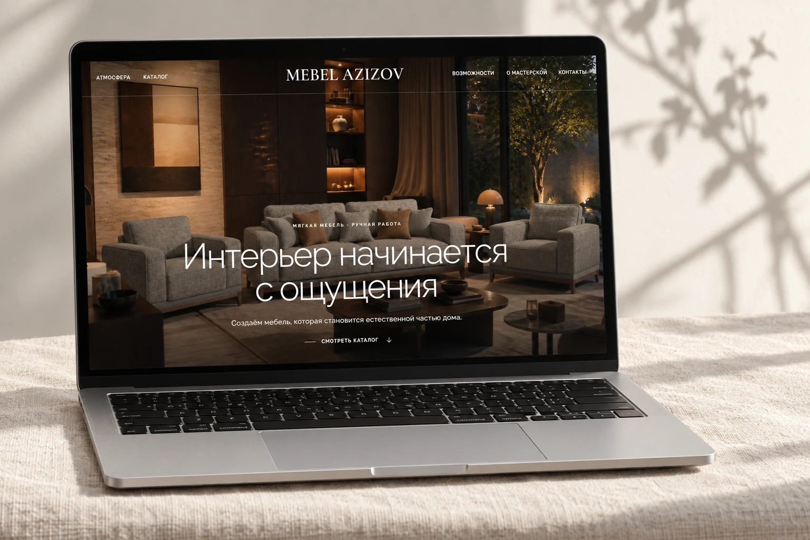
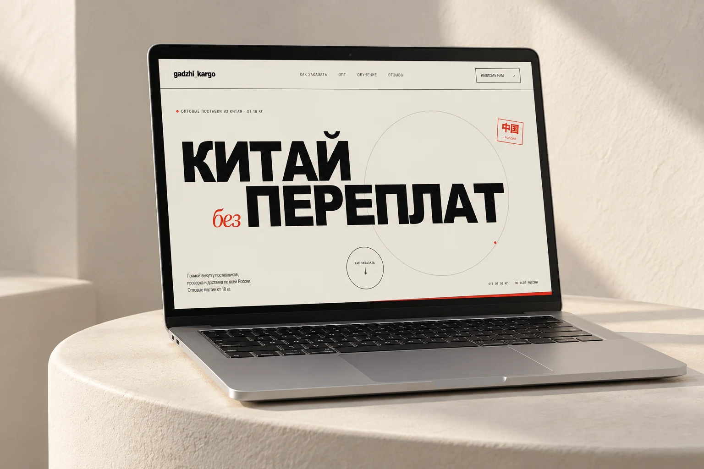
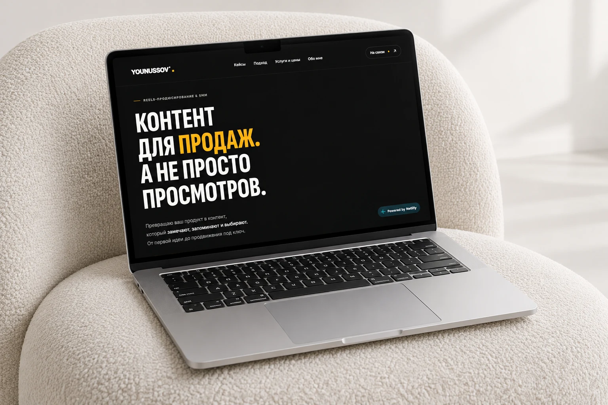
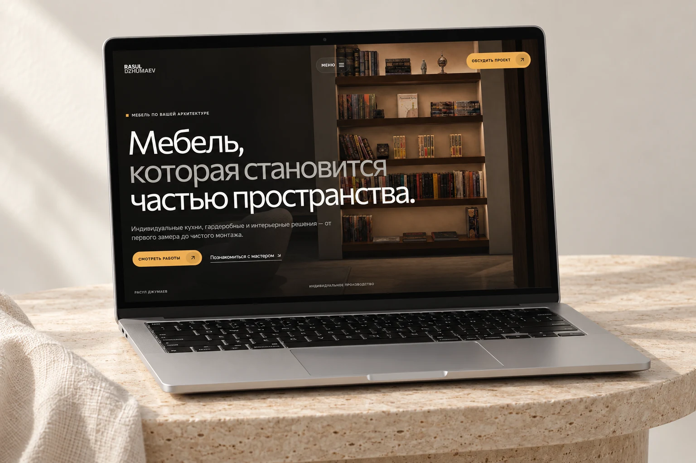
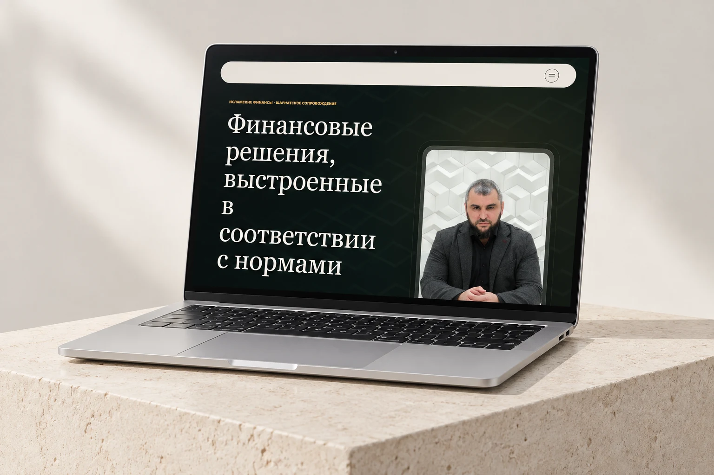
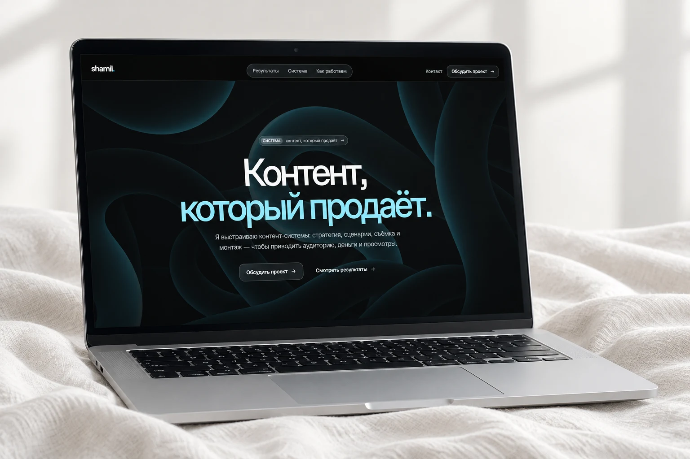
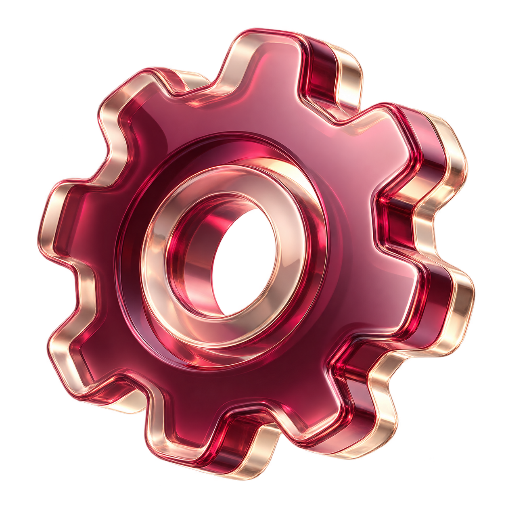
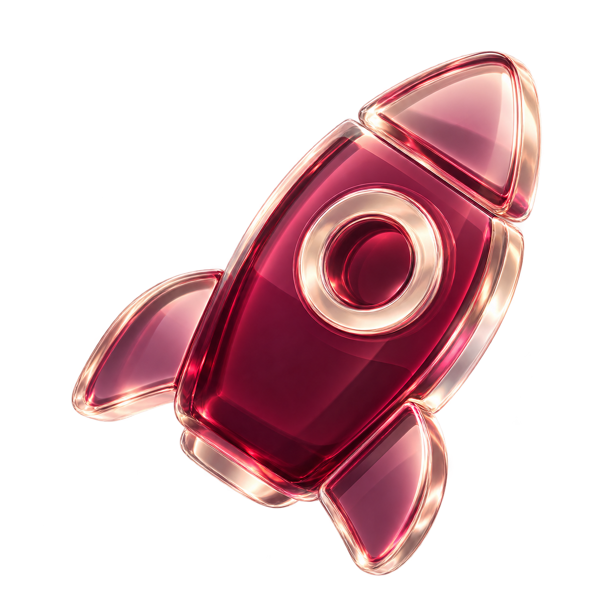
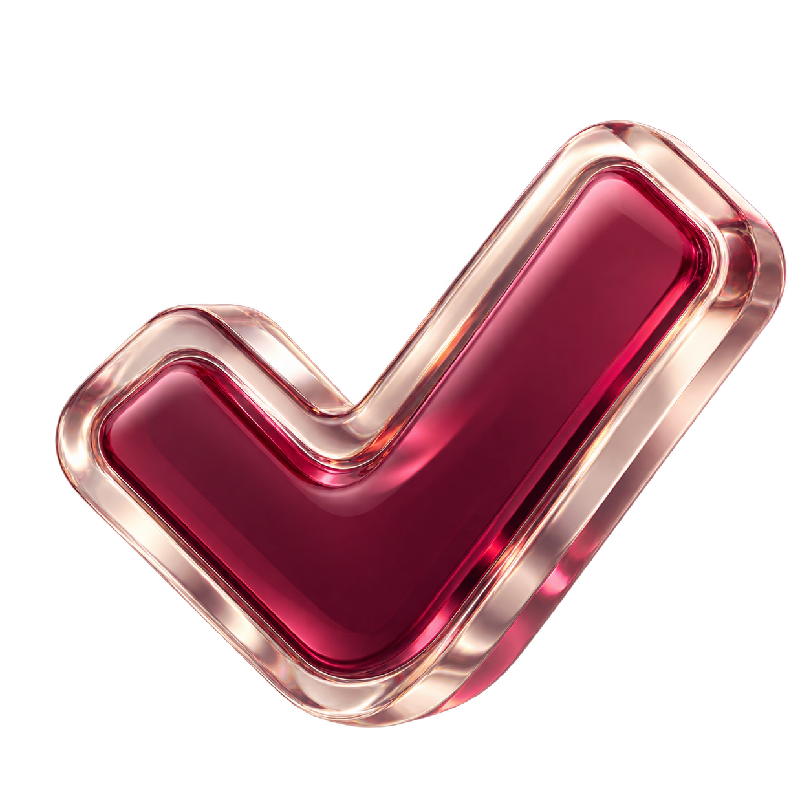

01 / 06VIEWМебель · сайт-каталог
Смотреть сайт Mebel Azizov
Разработали сайт-каталог мягкой мебели. Объединили модели и интерьерные фотографии, чтобы покупатель мог оценить мебель и выбрать, что обсудить с производителем.
Разработка digital-продуктов
Поможем представить ваш бизнес, принимать заявки и упростить работу с клиентами. Берём на себя структуру, дизайн и разработку.
Обсудить задачуПоказываем, как мы помогаем бизнесу представить продукт, объяснить свои услуги и получить обращение.

01 / 06VIEWРазработали сайт-каталог мягкой мебели. Объединили модели и интерьерные фотографии, чтобы покупатель мог оценить мебель и выбрать, что обсудить с производителем.

02 / 06VIEWРазработали сайт сервиса доставки из Китая. Объяснили, как устроены закупка и перевозка, и собрали путь от знакомства с услугой до заявки.

03 / 06VIEWСоздали сайт Reels-продюсера. Собрали услуги, портфолио и подход к съёмке, чтобы потенциальный клиент мог оценить работы и обсудить свой проект.

04 / 06VIEWСоздали сайт мебельного мастера. Показали готовые работы и этапы производства, чтобы клиент понимал, какую мебель можно заказать и с чего начать.

05 / 06VIEWРазработали сайт эксперта по исламским финансам. Представили опыт и направления консультаций, помогли посетителю найти нужную услугу и связаться с экспертом.

06 / 06VIEWСоздали сайт специалиста по контенту. Объединили стратегию, съёмку, монтаж и примеры работ, чтобы заказчик видел состав услуги и мог обсудить сотрудничество.
Выбираем инструмент под задачу бизнеса.
Лендинги, портфолио, каталоги и корпоративные сайты.
Чтобы вас замечали, понимали и выбирали.
Заявки, записи, ответы на частые вопросы.
Меньше рутины — больше времени на главное.
Полноценный интерфейс внутри привычного мессенджера.
Для каталога, бронирования или вашего сервиса.
Хороший digital чувствуется.
Когда красиво — и понятно,
куда нажать дальше.

Изучаем продукт, аудиторию и то, как вы работаете с клиентами. На этой основе выстраиваем структуру и содержание сайта.

Используем AI для ускорения разработки и рутинных задач. Проверяем результат и дорабатываем детали под ваш проект.

Выстраиваем понятный путь к обращению: предложение, аргументы, кнопки и форма. Каждый элемент помогает посетителю сделать следующий шаг.
После первого предложения обсуждаем, что нужно вашему бизнесу. Определяем задачи, объём работы, сроки и стоимость.
На выходе / понятная задачаПросим прислать необходимые материалы. Уточняем, чего не хватает для начала работы.
На выходе / материалы для проектаНа основе задачи и материалов разрабатываем сайт: структуру, оформление, анимации и нужные функции. Адаптируем под разные экраны.
На выходе / первая версия сайтаВы смотрите готовую версию и делитесь обратной связью. Вносим согласованные правки, проверяем детали и готовим сайт к запуску.
На выходе / готовый сайтМы реализовывали проекты для бизнесов и экспертов минимум из 10 сфер.
сфер бизнеса и экспертизы
Расскажите, что хотите запустить или улучшить.
Мы предложим решение и оценим сроки и стоимость.
Мы рассчитываем стоимость под вашу задачу: учитываем объём страниц, функции и готовность материалов. Напишите, что нужно сделать, — мы уточним детали и согласуем цену до начала работы.
Мы назовём срок после обсуждения задачи и материалов. На него влияют объём сайта, сложность функций и правки. Если вам важно успеть к определённой дате, скажите об этом в начале разговора.
Да. Расскажите о вашем бизнесе, клиентах и задаче. Мы зададим уточняющие вопросы, поможем выбрать формат и составить список нужных функций. Для первого разговора достаточно вашей идеи.
Да. Мы адаптируем сайт под телефон, планшет и компьютер. Проверяем, удобно ли читать текст, смотреть работы, нажимать кнопки и оставлять заявку на разных экранах.
Нет, всё это делаем сами, и для вас нет никаких сложностей.
Мы передаём готовый проект и доступы, объясняем, как им пользоваться. Предоставляем месяц бесплатной поддержки. Если вам нужны новые страницы, функции или помощь с обновлениями, обсудим объём и стоимость дальнейшей работы.